Mockups of the Film node (F-01). Each picture is a page in html/pages/ built from the app's own DOM and CSS at 1440 × 900, shot at 2×. The film pictures are hand-made illustrations of a print, not the engine's output. Where two screens carry an Option tag, the owner chooses (F-H1). docs/24 wins over these pictures.
01
Add node menu
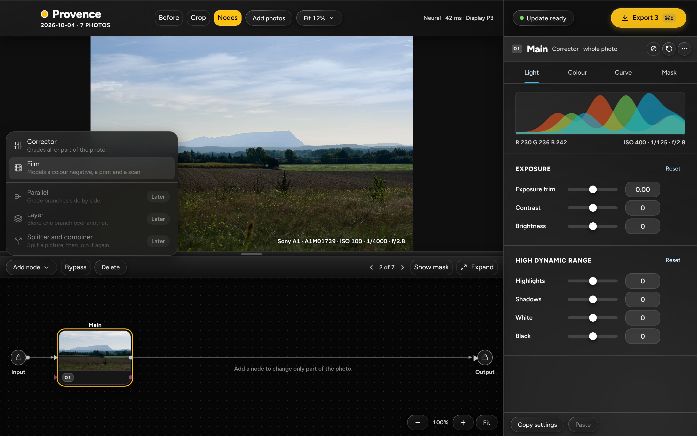
- The menu on an untouched photo: Corrector, then Film ("Models a colour negative, a print and a scan."), a line, then Parallel, Layer and Splitter and combiner greyed with "Later". Outside is gone.
- Film is enabled and is the only new row.
02
The graph and the Film tab
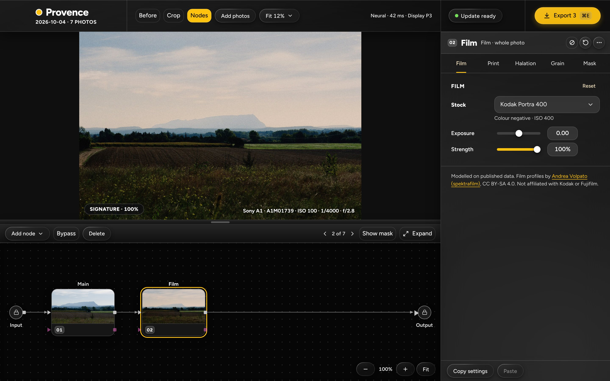
- Input, 01 Main, 02 Film, Output. The Film node is selected; its card thumbnail is the hand-made film picture. The panel is on Film: Stock (Kodak Portra 400, with "Colour negative · ISO 400" under it), Exposure, Strength.
- The credit line is at the foot of the tab, with its link to the project page (opens in the system browser).
03
Stock picker, option A
Option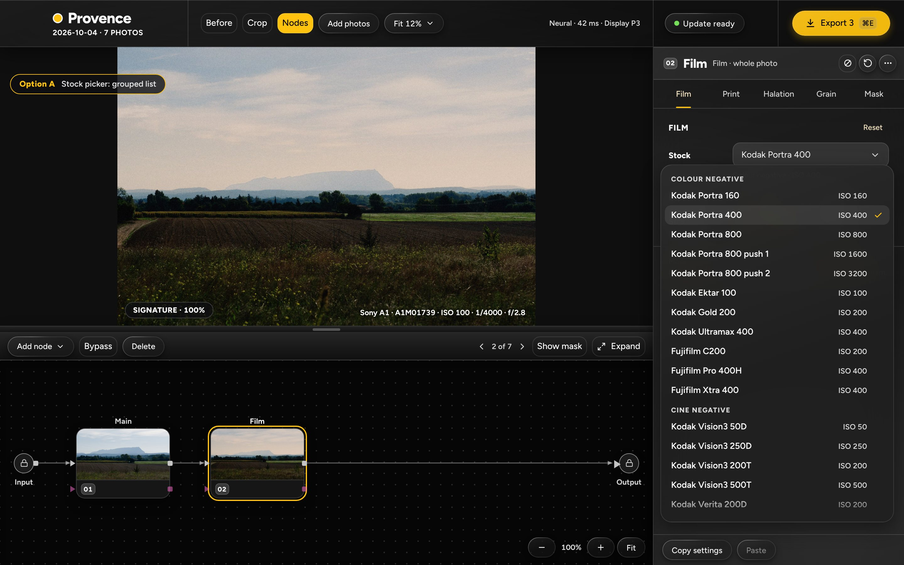
- A grouped list: Colour negative, Cine negative, Slide. Each row is the stock name and its ISO. The names, ISO and maker come from one data file (
names.json). - It scrolls (20 rows and 3 headings). Cheap to build, and one file changes the names.
04
Stock picker, option B
Option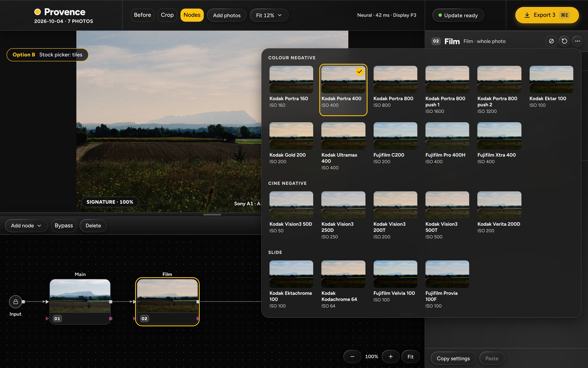
- Tiles with a small render of this photo in each stock, same groups. All 20 fit without scrolling.
- The tiles are hand-made here. In the app each is a real render of the open photo through the stock: 20 small renders when the picker opens.
05
Print tab, Lights option A
Option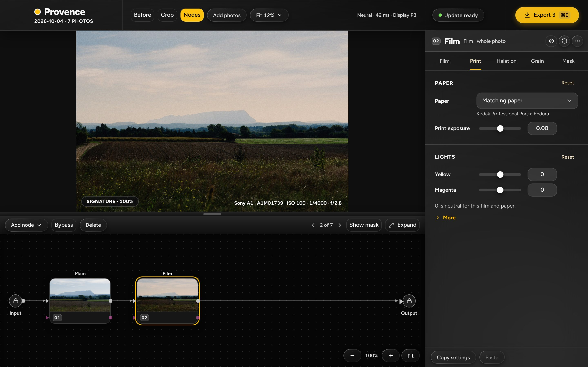
- Paper ("Matching paper", with the paper's name under it), Print exposure, then Lights: Yellow and Magenta sliders, the hint "0 is neutral for this film and paper.", and a More row that holds Cyan.
05b
The paper list
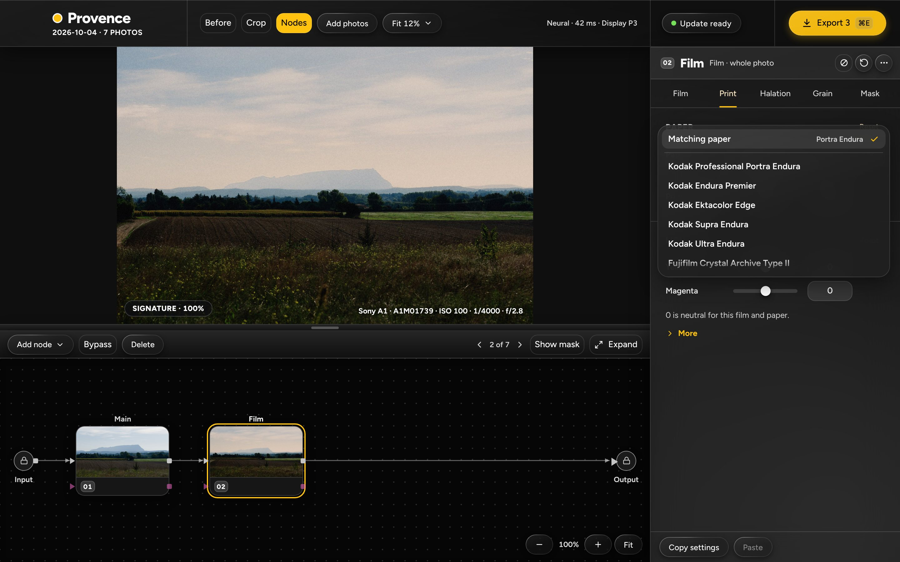
- "Matching paper" first, then the six papers. The cine print films (2383, 2393) are hidden until a projector lamp is sourced (docs/24 §6.4).
06
Print tab, Lights option B
Option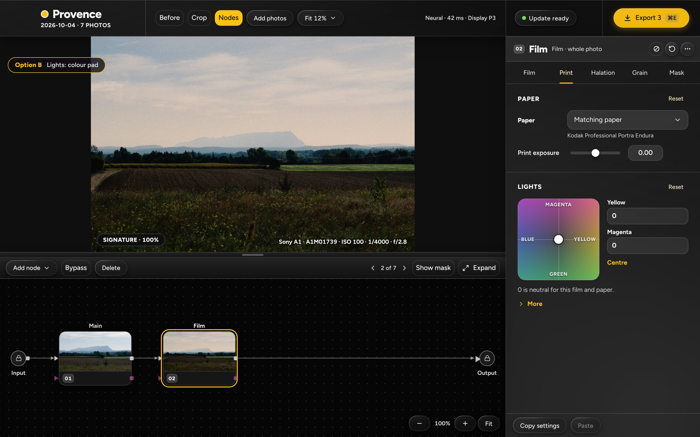
- A colour pad for yellow and magenta (yellow to the right, magenta up), two number fields, and Centre. Cyan stays under More.
- One handle moves both values, but it is harder to set one value alone, and the labels need the words Blue and Green for the opposite ends.
07
A slide stock
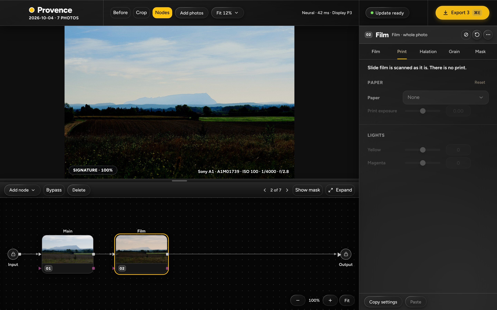
- Velvia 100: vivid, deep blacks. The Print tab stays openable but dimmed; its page says "Slide film is scanned as it is. There is no print." and the controls are greyed.
08a
Halation and Grain, option A: two tabs (Grain, at 100 %)
Option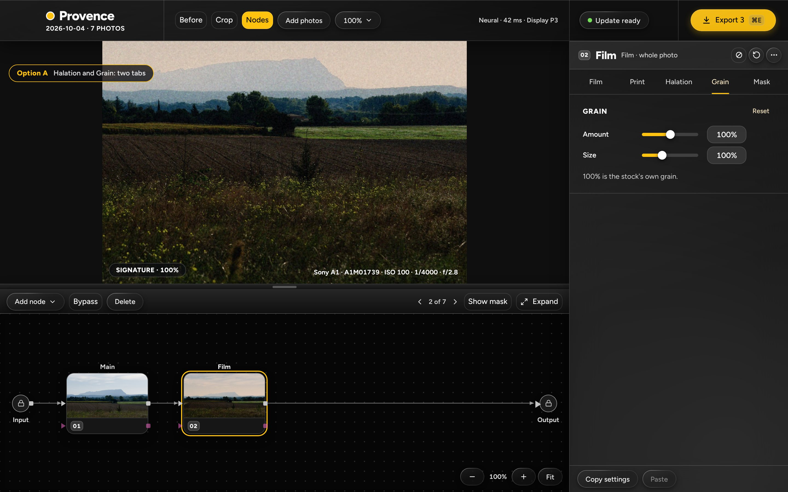
- Tab row: Film, Print, Halation, Grain, Mask. Grain holds Amount and Size. The photo is at 100 % to show the grain.
08c
Halation and Grain, option A: the Halation tab
Option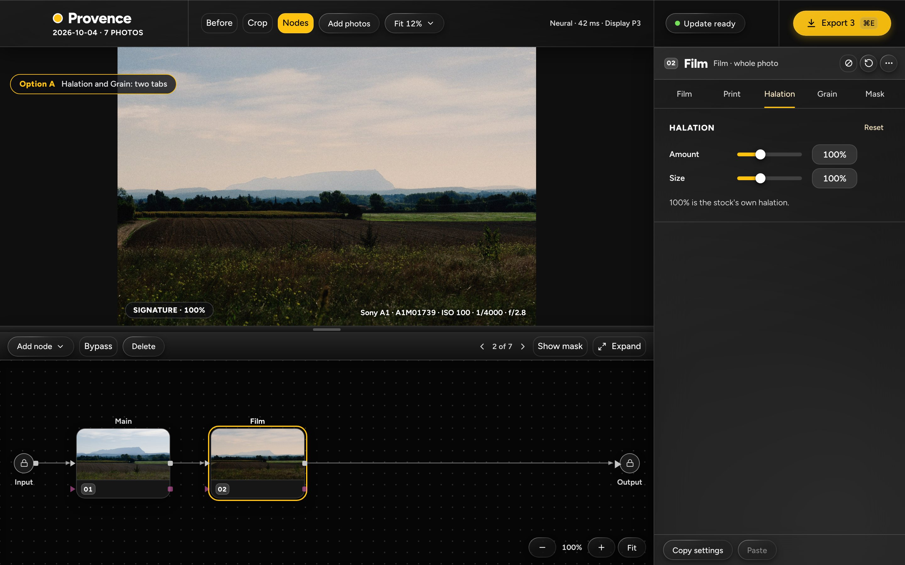
- The same option, on its Halation tab: Amount and Size.
08b
Halation and Grain, option B: one tab (at 100 %)
Option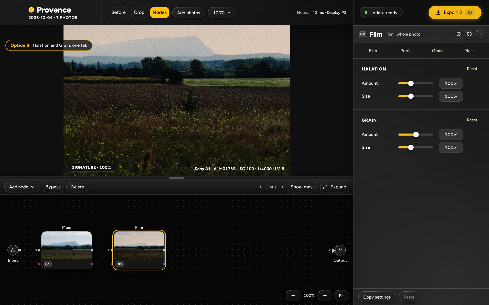
- Tab row: Film, Print, Grain, Mask. The one Grain tab holds a Halation card and a Grain card. Four tabs instead of five.
09
The Mask tab
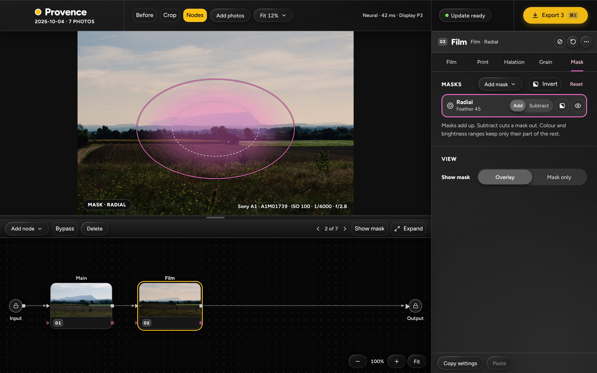
- The same as a corrector's: one Radial row, its overlay on the photo, the View card. Masks work on a Film node, because the node returns scene colour (variant A).
10
The Output while a Film node is live
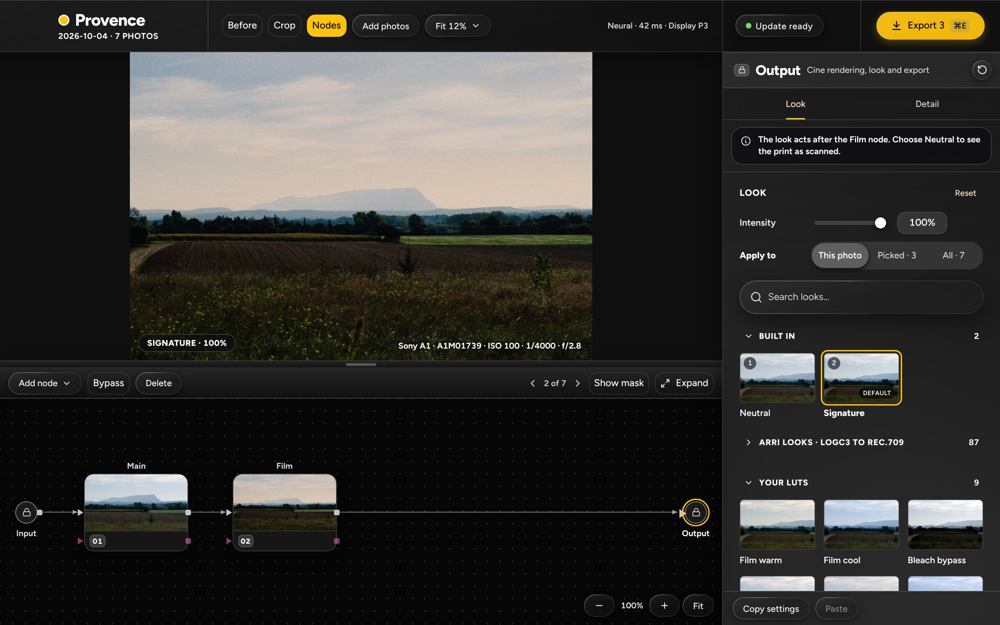
- The Output on its Look tab, with the note "The look acts after the Film node. Choose Neutral to see the print as scanned." under the tab row.
11
About
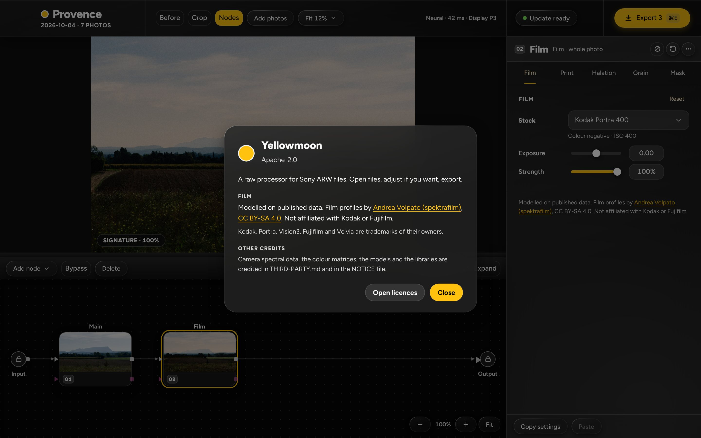
- The credit line with its links, the CC BY-SA 4.0 link, and "Kodak, Portra, Vision3, Fujifilm and Velvia are trademarks of their owners."
12
Brightness: as the app, or as printed
Option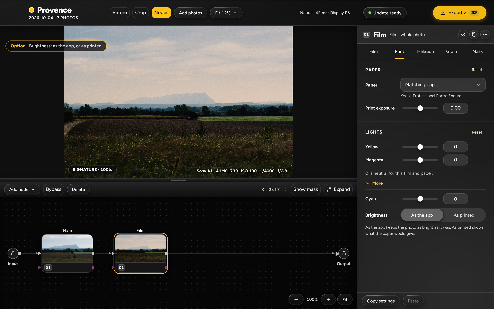
- Under More on the Print tab: Cyan, then a two-segment control, As the app (default; adding the node does not change the brightness) and As printed.